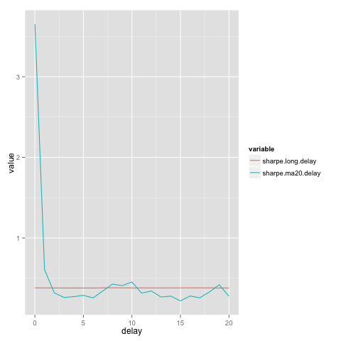
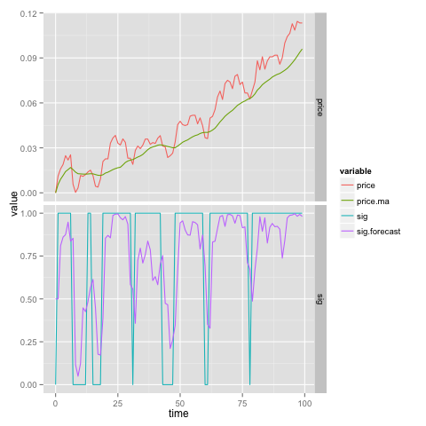
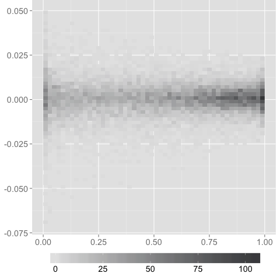
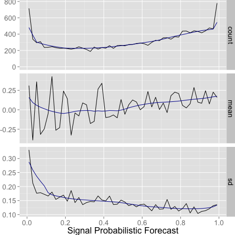

The analytics below takes the weighted moment function (wmom1) discussed in the previous post and applies the thinking to daily data on the SP500. The main purpose is to provide examples of:
- using wmom to replicate trading signals in a flexible and generic way.
- re-using wmom to estimate future return distribution and then apply that distribution to workshop future evolution of the signal.
- use of the bigvis package to compress and represent large data sets.
It's not commonly known that market signals involving moving averages are forecastable. You know with certainty the returns that are dropping out of the calculation and if we have some idea of the future stochastics, we can estimate a distribution of return innovations that is anything but a random walk. In other words, we can arrive at a probability that a signal will ping without doing anything involving guessing market direction. This effect is small, but as the analysis shows, there is a large and profitable gap between perfect execution contemporaneous with a signal ping, and execution before the ping based on future signal evolution that doesn't involve guessing future market direction.
sp500 data
rm(list = ls()) require(xts) require(quantmod) options(warn=-1) Sys.setenv(TZ='GMT') getSymbols("^GSPC",src='yahoo', from='1927-01-01') sp500.price=na.omit(Cl(GSPC)) sp500=log(sp500.price/lag(sp500.price,1)) sp500=sp500[-1] colnames(sp500)="sp500"
wmom
The function:
- first calculates the weighted mean for every day of the return series.
- fills in the initial mean values using the weights. This is equivalent to assuming returns prior to the time series were zero.
- uses the mean series as a centering for the weighted volatility calculation.
wmom = function(rets, weights) { mean=as.double(filter(rets,weights$mean,sides=1)) mean[1:length(weights$mean)]=cumsum(rets[1:length(weights$mean)]*as.matrix(weights$mean)) xvol=(rets-mean)^2 vol=as.double(filter(xvol,weights$vol,sides=1))^0.5 vol[1:length(weights$vol)]=cumsum(xvol[1:length(weights$vol)]*as.matrix(weights$vol))^0.5 wmom=data.frame(mean=mean, vol=vol) }
- unit test
rets=sp500 weights=weights #wmom = function(rets, weights) { mean=as.double(filter(rets,weights$mean,sides=1)) mean[1:length(weights$mean)]=cumsum(rets[1:length(weights$mean)]*as.matrix(weights$mean)) xvol=(rets-mean)^2 vol=as.double(filter(xvol,weights$vol,sides=1))^0.5 vol[1:length(weights$vol)]=cumsum(xvol[1:length(weights$vol)]*as.matrix(weights$vol))^0.5 wmom=data.frame(mean=mean, vol=vol) #}
moments regression
Future volatility is highly forecastable, based on historical volatility and historical mean return. This always needs to be accounted for any statitical analysis of time series and will often result in random varaites moving from being fat-tailed to normal.
l=251 weights=data.frame(mean=rep(1/l,l),vol=rep(1/l,l)) m=wmom(sp500,weights) data=data.frame(sp500[-1],sp500[-1]^2, m$mean[-length(m$mean)],m$vol[-length(m$vol)]) #1 day delay in signal colnames(data)=c("sp500","sp500.vol","hmean","hvol") fit.mean = lm(sp500 ~ hmean + hvol,data=data) summary(fit.mean) fit.vol = lm(sp500.vol ~ hmean + hvol,data=data) summary(fit.vol)
Call:
lm(formula = sp500 ~ hmean + hvol, data = data)
Residuals:
Min 1Q Median 3Q Max
-0.229363 -0.004412 0.000192 0.004681 0.109353
Coefficients:
Estimate Std. Error t value Pr(>|t|)
(Intercept) 6.146e-05 2.167e-04 0.284 0.777
hmean 1.026e-01 1.338e-01 0.767 0.443
hvol 2.198e-02 2.086e-02 1.053 0.292
Residual standard error: 0.009785 on 15924 degrees of freedom
Multiple R-squared: 7.934e-05, Adjusted R-squared: -4.625e-05
F-statistic: 0.6317 on 2 and 15924 DF, p-value: 0.5317
Call:
lm(formula = sp500.vol ~ hmean + hvol, data = data)
Residuals:
Min 1Q Median 3Q Max
-0.000542 -0.000076 -0.000039 0.000006 0.052346
Coefficients:
Estimate Std. Error t value Pr(>|t|)
(Intercept) -1.993e-05 1.138e-05 -1.751 0.08 .
hmean -6.077e-02 7.029e-03 -8.645 <2e-16 ***
hvol 1.496e-02 1.096e-03 13.657 <2e-16 ***
---
Signif. codes: 0 '***' 0.001 '**' 0.01 '*' 0.05 '.' 0.1 ' ' 1
Residual standard error: 0.0005139 on 15924 degrees of freedom
Multiple R-squared: 0.02527, Adjusted R-squared: 0.02515
F-statistic: 206.4 on 2 and 15924 DF, p-value: < 2.2e-16
So the regression indicates that historical mean and volatility strongly predicts return^2.
ma(20) price performance
A variation of wmom as we don't need a weighted volatility estimate for the price ma(20) signal.
wmean = function(rets, weights) { wm=as.double(filter(rets,weights,sides=1)) wm[1:length(weights)]=cumsum(rets[1:length(weights)]*as.matrix(weights)) wmean=wm }
Weights as per the previous post analytics.
rets=sp500 weights=seq(0.95,0.05,-0.05) #wmean = function(rets, weights) { wmean=as.double(filter(rets,weights,sides=1)) wmean[1:length(weights)]=cumsum(rets[1:length(weights)]*as.matrix(weights)) #}
And a move to analytics based on log(1+return) to remove compounding issues.
sharpe = function(rets) { m=sum(log(1+rets))/length(rets)*251 v=sd(log(1+rets))*(251^0.5) sharpe=m/v }
The headline sharpe ratio for the signal is much higher than long-only.
weights.ma20=seq(0.95,0.05,-0.05) m=wmean(sp500,weights.ma20) sig=as.double(m>0) sig=sig[-length(sig)] sharpe.long = sharpe(sp500[-1]) sharpe.ma20 = sharpe(sp500[-1]*sig) c(sharpe.long,sharpe.ma20)
| sharpe long-only | 0.38 |
| sharpe price ma(20) | 0.61 |
The code below varies the delay between signal reading and trade execution.
weights.ma20=seq(0.95,0.05,-0.05) m=wmean(sp500,weights.ma20) sig=as.double(m>0) sharpe.ma20.delay = rep(0,20) sharpe.long.delay = rep(0,20) for (x1 in 0:20) { sharpe.long.delay[x1+1] = sharpe(sp500[(x1+1):length(sp500)]) sharpe.ma20.delay[x1+1] = sharpe(sp500[(x1+1):length(sp500)]*sig[1:(length(sp500)-x1)]) } require(reshape) data = melt(data.frame(sharpe.long.delay, sharpe.ma20.delay, delay=0:20),id="delay") require(ggplot2) ggplot(data=data, aes(x=delay, y=value,color=variable)) + geom_line()

The calculation of sharpe according to signal delay illustrates a few important principles:
- a sharpe of 3.5 is what you get if you fail to be careful and introduce any sort of look-ahead bias. When humans look at price charts versus moving average lines, there is a failure to recognise that the apparently strong relationship is due to look-ahead bias. The eye includes the price movement from before the lines cross which contains this large sharpe.
- signal effectiveness decays rapidly. In this example, it is assumed that the calculation of the signal and the trade are assumed to occur simultaneously (at close). Wait till next open and there is no excess sharpe.
- any forecasting ability, ahead of the actual ping, can be a significant profit opportunity and even in excess of the original signal sharpe.
turnover adjustment
sharpe.costs = function(rets,turnover,cost) { m=sum(log(1+rets))/length(rets)*251-turnover*cost v=sd(log(1+rets))*(251^0.5) sharpe.costs=m/v }
turnover = sum(abs(diff(sig)))/length(sig)*251 x1=1 scost = sharpe.costs(sp500[(x1+1):length(sp500)]*sig[1:(length(sp500)-x1)],turnover, 0.001)
0.340845298070155
This signal is economically significant is trade costs are below 0.1%.
auto-conditionality estimates
Auto-conditionality is a made up term to represent the relationship between historical mean and volatility of return and future distributional characteristics.
parameter estimation
l=251 weights=data.frame(mean=rep(1/l,l),vol=rep(1/l,l)) m=wmom(sp500,weights) data=data.frame(sp500[-1],sp500[-1]^2, m$mean[-length(m$mean)],m$vol[-length(m$vol)]) #1 day delay in signal colnames(data)=c("sp500","sp500.vol","hmean","hvol") fit.mean = lm(sp500 ~ 0 + hmean + hvol,data=data) summary(fit.mean) fit.vol = lm((sp500.vol-0.005^2) ~ 0 + hmean + hvol,data=data) summary(fit.vol)
Call:
lm(formula = sp500 ~ 0 + hmean + hvol, data = data)
Residuals:
Min 1Q Median 3Q Max
-0.229373 -0.004402 0.000205 0.004693 0.109361
Coefficients:
Estimate Std. Error t value Pr(>|t|)
hmean 0.121620 0.115859 1.050 0.293862
hvol 0.027419 0.008171 3.356 0.000793 ***
---
Signif. codes: 0 '***' 0.001 '**' 0.01 '*' 0.05 '.' 0.1 ' ' 1
Residual standard error: 0.009785 on 15925 degrees of freedom
Multiple R-squared: 0.0009223, Adjusted R-squared: 0.0007968
F-statistic: 7.35 on 2 and 15925 DF, p-value: 0.0006446
Call:
lm(formula = (sp500.vol - 0.005^2) ~ 0 + hmean + hvol, data = data)
Residuals:
Min 1Q Median 3Q Max
-0.000514 -0.000085 -0.000048 -0.000002 0.052353
Coefficients:
Estimate Std. Error t value Pr(>|t|)
hmean -0.0746577 0.0060882 -12.26 <2e-16 ***
hvol 0.0109856 0.0004294 25.59 <2e-16 ***
---
Signif. codes: 0 '***' 0.001 '**' 0.01 '*' 0.05 '.' 0.1 ' ' 1
Residual standard error: 0.0005142 on 15925 degrees of freedom
Multiple R-squared: 0.04205, Adjusted R-squared: 0.04193
F-statistic: 349.5 on 2 and 15925 DF, p-value: < 2.2e-16
vol estimate
mean.est = 0.0003 + 0.12 * data$hmean + 0.011 * data$hvol vol.est = pmax(0.005^2 + -0.075 * data$hmean + 0.027 * data$hvol)^0.5
signal forecasting
Armed with a concrete signal (1 (long) if price is above ma(20) price and 0 if price is below ma(20) price) and a distribution theory about return stochastics (volatility is auto-conditional), a forecast of the distribution signal can be performed so that a probability statement about the future signal can be made.
formulae
A bit of maths may help. The actual signal (the gap between current price and ma(20) of price is a price signal which has been transformed into a return signal by dividing by the oldest price (\(price_{20}\)). Tomorrows signal will be the same return signal, but divided by \(price_{19}\).
The difference between the signal today and the signal tomorrow is:
\begin{align} signal_{today} &= 0.95 \ast p_{0} - 0.05 \ast p_{1} - ... -0.05 \ast p_{19}\\ signal_{tomorrow} &= 0.95 \ast p_{-1} - 0.05 \ast p_{0} - ... -0.05 \ast p_{18}\\ \delta{signal} &= 0.95 \ast p_{-1} - 1.0 \ast p_{0} + 0.05 p_{19} \end{align}In return terms, (dividing by current price: \(price_{0}\))
\begin{multline} \delta{signal}/price_{0} = 0.95 \ast return_{-1} - 0.05 \ast \sum_{0}^{18}return \end{multline}\(return_{-1}\) is tomorrows return because the subscript convention was to label returns backwards in time.
model
Modelling \(r_{-1}\) as a random variate r ~ N(0,vol.est) enables the signal to be turned into a probabilistic measure (what is the probability of the signal being long tomorrow?).
price=c(0,cumsum(log(1+sp500))) weights.av19 = rep(0.05,19) weights.av20 = rep(0.05,20) price.ma=as.double(filter(price,weights.av20,sides=1)) price.ma[1:length(weights.av20)]=cumsum(price[1:length(weights.av20)])/1:length(weights.av20) gap=price-price.ma st.mean.forecast = 0 return.forecast = st.mean.forecast-c(0,wmean(log(1+sp500),weights.av19)) price.ma.delta = c(0,price.ma[1:(length(price)-1)] * return.forecast[1:(length(price)-1)]) price.ma.forecast = c(0,price.ma[1:(length(price)-1)]) - price.ma.delta gap.forecast.norm = (c(0,gap[1:(length(price)-1)])+price.ma.delta)/c(0.005,vol.est[1:(length(price)-1)]) sig.forecast = pnorm(gap.forecast.norm) sig = as.double(gap>0) df = data.frame(rets=c(0,sp500),price,price.ma,price.ma.forecast,sig,sig.forecast, time=0:(length(price)-1)) colnames(df) = c("rets","price","price.ma","forecast.ma","sig","sig.forecast","time") require(ggplot2) require(reshape2) df.melt = melt(df[1:100,],measure.vars=c("price","price.ma","sig","sig.forecast")) df.melt$type = c("sig","price")[as.double(is.element(df.melt$variable,as.factor(c("price","price.ma"))))+1] ggplot(df.melt, aes(x = time, y = value)) + geom_line(aes(color = variable)) + facet_grid(type ~ ., scales = "free_y")

The example can be easily extended out beyond a day.
signal forecast and returns
Return histograms for various signal probabilities is shown below:
require(bigvis) require(grid) tweak <- list( theme( legend.position = "bottom", plot.margin = unit(c(0, 0.5, 0, 0.5), "lines"), legend.key.width = unit(1, "inches"), text = element_text(size = 18) ), labs(x = NULL, y = NULL, fill = NULL), scale_fill_gradient(low="#e5e5e5", high = "#444548") ) ret.sum = condense(bin(df$sig.forecast,0.02),bin(df$rets,0.002)) rs = peel(ret.sum,.95) autoplot(rs) + tweak

mean and volatility variations
require(bigvis) tweak <- list( scale_x_continuous("Signal Probabilistic Forecast", breaks = seq(0,1,0.2)), ylab(NULL), theme( plot.margin = unit(c(0, 0, 0, 0), "lines"), text = element_text(size = 18), panel.margin = unit(0.25, "cm") ) ) ret.sum = condense(bin(df$sig.forecast,0.02),z=df$rets, summary = "sd") d = data.frame( ret = rep(ret.sum$df.sig.forecast,3), summary = rep(c("count","mean","sd"), each = nrow(ret.sum)), value = c(ret.sum$.count, ret.sum$.mean*251, ret.sum$.sd*(251^.5)) ) smoothes <- list( count = smooth(ret.sum, 0.2, var = ".count", type = "robust"), mean = smooth(ret.sum, 0.2, var = ".mean", type = "robust"), sd = smooth(ret.sum, 0.2, var = ".sd", type = "robust")) smoothes$mean$.mean = smoothes$mean$.mean*251 smoothes$sd$.sd = smoothes$sd$.sd*(251^0.5) smoothes <- Map(function(x, n) { names(x)[2] <- "value" x$summary <- n x }, smoothes, names(smoothes)) smooth <- do.call(rbind, smoothes) smooth$summary <- factor(smooth$summary, levels = c("count", "mean", "sd")) levels(smooth$summary)[1] <- "count" qplot(ret, value, data = d, geom = "line") + facet_grid(summary ~ ., scales = "free") + tweak + geom_line(data = smooth, aes(x=df.sig.forecast, y=value),colour="#000099")

The chart above utilises the bigvis package to compress the return results for the range of signal forecasts.
Clearly the price ma(20) signal is above all a proxy for volatility:
- a signal forecast of 0 (price clearly below the moving average of price) is strongly associated with increased volatility. Volatility reduces sharpely for signal strength above zero and continues to decrease as signal increases.
- there is little difference between returns when the signal is clearly 1 and the returns when the signal is clearly 0. Although probably not statistically significant, there is some increase in the average return when the signal probabilities are around 0.5. This may be associated with resistance pressures on return when current price is at a popular moving average line.
Footnotes:
refactored name. Previous post referred to weighted.historical